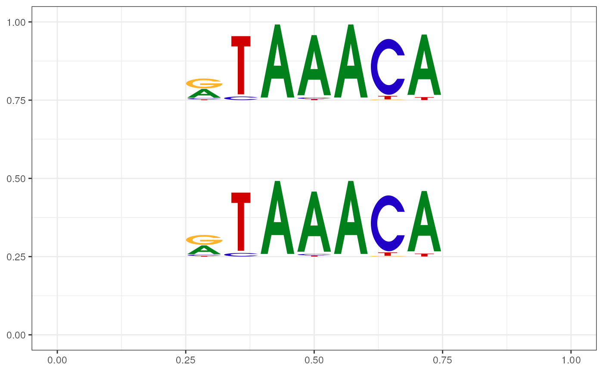

geom_motif.Rdgeom_motif uses the locations of the four corners (xmin, xmax, ymin and ymax) to plot motifs.
geom_motif(
mapping = NULL,
data = NULL,
stat = "identity",
position = "identity",
...,
ic.scale = TRUE,
use.xy = FALSE,
show.legend = NA,
inherit.aes = TRUE
)Set of aesthetic mappings created by aes() or aes_(). If specified and inherit.aes = TRUE (the default), it is combined with the default mapping at the top level of the plot. You must supply mapping if there is no plot mapping.
The data to be displayed in this layer.
The statistical transformation to use on the data for this layer, as a string.
Position adjustment, either as a string, or the result of a call to a position adjustment function.
Other arguments passed on to layer().
logical If TRUE, the height of each column is proportional to its information content. Otherwise, all columns have the same height.
logical If TRUE, the required aesthethics will be x, y, width, height, and motif. Otherwise, xmin, ymin, xmax, ymax and motif.
Not used.
If FALSE, overrides the default aesthetics, rather than combining with them.
a layer that contains GeomMotif object.
geom_motif() understands the following aesthetics (required aesthetics are in bold):
xmin
xmax
ymin
ymax
motif
angle
fontfamily
fontface
OR
x
y
width
height
motif
angle
fontfamily
fontface
pcm <- read.table(file.path(find.package("motifStack"),
"extdata", "bin_SOLEXA.pcm"))
pcm <- pcm[,3:ncol(pcm)]
rownames(pcm) <- c("A","C","G","T")
motif <- new("pcm", mat=as.matrix(pcm), name="bin_SOLEXA")
df <- data.frame(xmin=c(.25, .25), ymin=c(.25, .75), xmax=c(.75, .75), ymax=c(.5, 1))
df$motif <- list(pcm2pfm(motif), pcm2pfm(motif))
library(ggplot2)
ggplot(df, aes(xmin=xmin, ymin=ymin, xmax=xmax, ymax=ymax, motif=motif)) +
geom_motif() + theme_bw() + ylim(0, 1) + xlim(0, 1)
